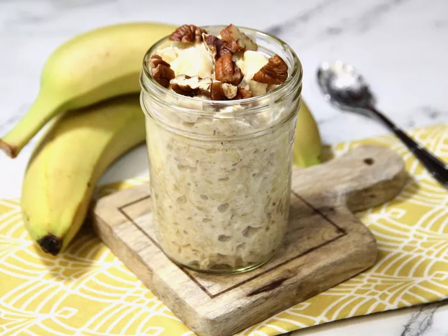

Banana Oatmeal

Description
Banana oatmeal is a hearty and nutritious breakfast option made by cooking oats with mashed bananas. It is naturally sweetened by the bananas and can be customized with various toppings such as nuts, seeds, and fruits.
Ingredients
- 1 cup rolled oats
- 2 cups water or milk
- 1 ripe banana, mashed
- 1/2 teaspoon cinnamon
- 1 tablespoon honey or maple syrup (optional)
- Toppings: sliced bananas, nuts, seeds, berries
Steps
- In a medium saucepan, bring the water or milk to a boil.
- Add the rolled oats and reduce the heat to low. Simmer for about 5 minutes, stirring occasionally.
- Stir in the mashed banana and cinnamon. Cook for an additional 2-3 minutes until the oatmeal reaches your desired consistency.
- Remove from heat and stir in honey or maple syrup if using.
- Serve the oatmeal in bowls and top with your favorite toppings such as sliced bananas, nuts, seeds, or berries.